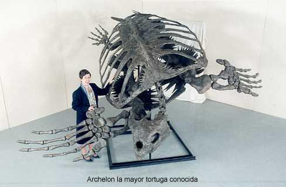

|
ORIGEN DE LAS
TORTUGAS
Las
tortugas están clasificadas como reptiles (como las
serpientes, los cocodrilos...).
De acuerdo
con los registros fósiles, es difícil precisar el origen de
las tortugas. En sedimentos del Triásico, aproximadamente hace
200 millones de años, aparecen y se diversifican las primeras
tortugas. A finales del Jurásico y principios del Cretácico,
se inicia una diversificación en las tortugas, en la que
desarrollaron la mayoría de las características de las
especies actuales, aparecen incluso algunos representantes de
grandes dimensiones.
Precursores
de las tortugas fueron: el Henodus chelyops, que
era un reptil marino desprovisto de dientes, que poseía un
caparazón como el de las tortugas. Medía un metro de longitud
y se alimentaba de conchas. El Placochelys, que
se parecía mucho a nuestras tortugas actuales. También marino,
vivía en aguas profundas, se alimentaba de conchas y pequeños
animales marinos. Sus largos miembros le servían de palas.
Las
primeras tortugas, tal como se clasifican hoy, se originaron
en el periodo Triásico de la Era Mesozoica, antes de que los
grandes reptiles terrestres, acuáticos y voladores alcanzaran
su máximo esplendor. Pero la mayoría de ellos se fueron
extinguiendo entre el Cretácico, hace 130 millones de años y
principios del Cenozoico, hace 65 millones de años, cuando el
mundo empezó a ser dominado por los mamíferos y las aves,
evolutivamente mejor adaptados.
La primera
que se conoce es la llamada Proganochelys Quenstedi,
tenía caparazón, esqueleto y pico, y conservaba algunas
características primitivas, hoy desaparecidas: pequeños
dientes en la boca, una clavícula y una oreja primitiva. Era
también incapaz de recoger su cabeza o sus miembros en su
caparazón.
La más
antigua tortuga de mar conocida aparece en el Jurasico tardío
hace 208-144 millones de años. Los científicos piensan que las
actuales tortugas marinas proceden de antepasados que vivían
en ciénagas.
En
medio del Jurasico, las tortugas se dividieron en los dos
grupos principales que aún existen hoy en día: el
Pleurodires (aquéllas que doblan su cuello hacia un lado)
y el Cryptodires (recogen su cabeza dentro de su
caparazón hacia atrás doblando su cuello formando un arco).
Las cryptodires son más recientes en la evolución que
las pleurodires.
La mayor
tortuga de todas las épocas fue Archelon, que
vivió en los mares del Cretáceo hace más de 65 millones de
años. Alcanzaba el tamaño de un elefante (unos 4 metros) según
los fósiles descubiertos en el centro de Estados Unidos que
era un mar en el Cretáceo. Debido a su caparazón fino
Archelon podría ser un antepasado de la tortuga Laúd.

Desde sus orígenes, estos
animales se han caracterizado por poseer una armadura peculiar
que les ha permitido sortear a una buena parte de sus
depredadores, con el simple hecho de encerrarse en ella. Esta
armadura está formada dorsalmente por el caparazón y
ventralmente por el plastrón, firmemente unidos uno al otro
por medio de los puentes. La concha está constituida por
placas óseas, en forma de mosaico, que por arriba forman una
bóveda, generalmente cubierta por escudos córneos. Esta coraza
tiene dos aberturas, una en la parte de delante, por donde
salen la cabeza y los miembros anteriores, y otra atrás y
hacia abajo, por donde salen la cola y los miembros
posteriores.
Algunos dudan del valor
evolutivo de la concha, ya que es una pesada armadura que
resta velocidad a los movimientos del animal, disminuyendo sus
aptitudes cuando, por ejemplo, persigue a sus presas o quiere
huir rápidamente de algún peligro. Pero el hecho indiscutible
es que, el poseer una protección de sus órganos vitales y al
mismo tiempo tener que transportar un gran peso, ha conferido
a las tortugas una actitud defensiva, no de ataque, que les ha
proporcionado más ventajas que problemas. Ha sido un "pasaje
seguro" a través de las eras geológicas, que les ha permitido
sobrevivir sus compañeros en el tiempo y llegar a nuestros
días en tal abundancia, que no hay duda de su éxito evolutivo.
En la actualidad existen
alrededor de 75 géneros y 250 especies de tortugas, de las
cuales ocho especies son marinas, 180 son de agua dulce y 62
de tierra, para un grupo de animales tan poco conocido podría
parecer un número exagerado más de doscientas especies, sin
embargo, esto es solamente un pálido reflejo de la gran
variedad que existió en épocas pretéritas. Si embargo,
paradojicamente, el hombre se está encargando de poner en
desequilibrio en unas cuantas décadas esta lenta labor
constructiva de la naturaleza, amenazando cada día con
extinguir mayor número de especies. De acuerdo con las
clasificaciones modernas, las actuales tortugas se agrupan en
las siguientes familias:
TESTUDINES
Cryptodira
TESTUDINIOIDEA
1)
Chelydridae
-tortugas mordedoras,
dulceacuícolas
2)
Kinosternidae
-tortugas de caja, dulceacuícolas
3)
Dermatemyidae -tortugas
blancas, dulceacuícolas
4)
Emyididae
-terrapenes,
tortugas dulceacuícolas
5)
Testudiniidae
-tortugas
terrestres
CHELONIOIDEA
6)
Cheloniidae -tortugas
marinas, con
escudos
7)
Dermochelyidae
-tortugas marinas, sin escudos
TRIONYCHIOIDEA
8)
Trionychidae
-tortugas de concha
blanda, dulceacuícolas
|